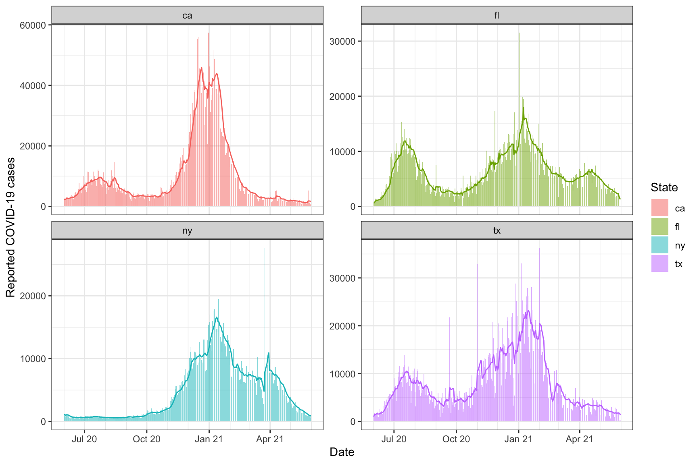

One of the most basic tools in the epitools package is slide_by_geo(), which is based on the family of functions provided by the slider package. In epitools, to “slide” means to apply a computation—represented as a function or formula—over a trailing window of n days of data, grouped by geo_value. Several other functions in the epitools package, such as pct_change() and estimate_deriv(), use slide_by_geo() as their workhorse.
Similar to the getting started guide, we’ll fetch daily reported COVID-19 cases for a few U.S. states (note: new, not cumulative cases) using the covidcast package, and then convert this to epi_signal format.
library(covidcast) library(epitools) library(dplyr) x <- covidcast_signal(data_source = "jhu-csse", signal = "confirmed_incidence_num", start_day = "2020-06-01", end_day = "2021-05-31", geo_type = "state", geo_values = c("ca", "fl", "ny", "tx")) %>% as.epi_signal(name = "covid19_cases") %>% select(value, geo_value, time_value)
Slide with a formula
We first demonstrate how to apply a 7-day trailing average to the daily counts in order to smooth the signal, by using a formula in the slide_fun argument of slide_by_geo().
x <- slide_by_geo(x, slide_fun = ~ Mean(.x$value), n = 7) head(x, 10)
## # A tibble: 10 × 4
## value geo_value time_value slide_value
## <dbl> <chr> <date> <dbl>
## 1 2360 ca 2020-06-01 2360
## 2 2372 ca 2020-06-02 2366
## 3 2214 ca 2020-06-03 2315.
## 4 3011 ca 2020-06-04 2489.
## 5 3025 ca 2020-06-05 2596.
## 6 3046 ca 2020-06-06 2671.
## 7 2404 ca 2020-06-07 2633.
## 8 2385 ca 2020-06-08 2637.
## 9 2700 ca 2020-06-09 2684.
## 10 3208 ca 2020-06-10 2826.The formula specified via slide_fun has access to all columns present in the original epi_signal data frame, and must refer to them with the prefix .x$. Here the function Mean() is a simple wrapper around mean() that omits NA values by default (provided by the epitools package).
Notice that slide_by_geo() returns a data frame with a new column appended that contains the results (from sliding the formula), named slide_value by default. We can instead specify a name up front using the col_name argument:
x <- slide_by_geo(x, slide_fun = ~ Mean(.x$value), n = 7, col_name = "7dav") head(x, 10)
## # A tibble: 10 × 5
## value geo_value time_value slide_value `7dav`
## <dbl> <chr> <date> <dbl> <dbl>
## 1 2360 ca 2020-06-01 2360 2360
## 2 2372 ca 2020-06-02 2366 2366
## 3 2214 ca 2020-06-03 2315. 2315.
## 4 3011 ca 2020-06-04 2489. 2489.
## 5 3025 ca 2020-06-05 2596. 2596.
## 6 3046 ca 2020-06-06 2671. 2671.
## 7 2404 ca 2020-06-07 2633. 2633.
## 8 2385 ca 2020-06-08 2637. 2637.
## 9 2700 ca 2020-06-09 2684. 2684.
## 10 3208 ca 2020-06-10 2826. 2826.As a simple sanity check, we visualize the 7-day trailing averages computed on top of the original counts:
library(ggplot2) theme_set(theme_bw()) ggplot(x, aes(x = time_value)) + geom_col(aes(y = value, fill = geo_value), alpha = 0.5, show.legend = FALSE) + geom_line(aes(y = `7dav`, col = geo_value), show.legend = FALSE) + facet_wrap(~ geo_value, scales = "free_y") + scale_x_date(minor_breaks = "month", date_labels = "%b %y") + labs(x = "Date", y = "Reported COVID-19 cases")

Slide with a function
We can also pass a function for the slide_fun argument in slide_by_geo(). In this case, the passed function must have the following argument structure: x, a data frame the same column names as the original data frame; followed by any number of named additional arguments; and ending with ..., to capture general additional arguments. Recreating the last example of a 7-day trailing average:
x <- slide_by_geo(x, slide_fun = function(x, ...) Mean(x$value), n = 7, col_name = "7dav") head(x, 10)
## # A tibble: 10 × 5
## value geo_value time_value slide_value `7dav`
## <dbl> <chr> <date> <dbl> <dbl>
## 1 2360 ca 2020-06-01 2360 2360
## 2 2372 ca 2020-06-02 2366 2366
## 3 2214 ca 2020-06-03 2315. 2315.
## 4 3011 ca 2020-06-04 2489. 2489.
## 5 3025 ca 2020-06-05 2596. 2596.
## 6 3046 ca 2020-06-06 2671. 2671.
## 7 2404 ca 2020-06-07 2633. 2633.
## 8 2385 ca 2020-06-08 2637. 2637.
## 9 2700 ca 2020-06-09 2684. 2684.
## 10 3208 ca 2020-06-10 2826. 2826.Building and running a local forecaster
As a more complicated example, we create a forecaster based on a local (in time) autoregression or AR model. AR models can be fit in numerous ways (using base R functions and various packages), but here we define it “by hand” both because it provides a more advanced example of sliding a function over an epi_signal object, and because it allows us to be a bit more flexible in defining a probabilistic forecaster: one that outputs not just a point prediction, but a notion of uncertainty around this. In particular, our forecaster will output a point prediction along with an 90% uncertainty band, represented by a predictive quantiles at the 5% and 95% levels (lower and upper endpoints of the uncertainty band).
The function defined below, prob_ar(), is our probabilistic AR forecaster. The lagsargument indicates which lags to use in the model, and ahead indicates how far ahead in the future to make forecasts (both are encoded in terms of the units of the time_value column; so, days, in the working epi_signal being considered in this vignette).
prob_ar <- function(v, lags = c(0, 7, 14), ahead = 7, min_train_window = 20, lower_level = 0.05, upper_level = 0.95, symmetrize = TRUE) { # Return NA if insufficient training data if (length(v) < min_train_window + max(lags) + ahead) { return(data.frame(point = NA, lower = NA, upper = NA)) } # Perform other simple checks stopifnot(all(lags >= 0), ahead > 0, max(lags) + ahead < length(v)) # Go and fit the AR model y <- dplyr::lead(v, n = ahead) x <- do.call(cbind, purrr::map(lags, ~ dplyr::lag(v, n = .x))) fit <- lm(y ~ x, na.action = na.omit) # Make a prediction newx <- tail(x, 1) point <- drop(c(1, newx) %*% coef(fit)) # Compute a band and return r <- residuals(fit) s <- ifelse(symmetrize, -1, NA) # Should the residuals be symmetrized? q <- quantile(c(r, s * r), probs = c(lower_level, upper_level), na.rm = TRUE) return(data.frame(point = point, lower = point + q[1], upper = point + q[2])) }
Now we go ahead and slide this AR forecaster over the working epi_signal of COVID-19 cases. Note that we actually model the 7dav column, to operate on the scale of smoothed COVID-19 cases. (This is clearly equivalent, up to a constant, to modeling weekly sums of COVID-19 cases.)
z <- x %>% slide_by_geo(slide_fun = ~ prob_ar(.x$`7dav`), n = 100, col_type = "list", col_name = "forecast") %>% mutate(target_date = time_value + 7) %>% select(-value, -slide_value) tail(z, 3)
## An `epi_signal` data frame with 3 rows and 5 columns.
##
## name : covid19_cases
## geo_type : state
## time_type : day
##
## # A tibble: 3 × 5
## geo_value time_value `7dav` forecast target_date
## <chr> <date> <dbl> <list> <date>
## 1 tx 2021-05-29 1740. <df [1 × 3]> 2021-06-05
## 2 tx 2021-05-30 1692. <df [1 × 3]> 2021-06-06
## 3 tx 2021-05-31 1306. <df [1 × 3]> 2021-06-07We can see that the forecast column is a list column (as specified in the call to slide_to_geo(), which was needed since prob_ar() returns a data frame), and we can use tidyr::unnest() to unnest it.
## # A tibble: 10 × 7
## geo_value time_value `7dav` point lower upper target_date
## <chr> <date> <dbl> <dbl> <dbl> <dbl> <date>
## 1 tx 2021-05-22 1756. 2078. 1448. 2709. 2021-05-29
## 2 tx 2021-05-23 1763. 2067. 1437. 2696. 2021-05-30
## 3 tx 2021-05-24 1824. 2069. 1434. 2703. 2021-05-31
## 4 tx 2021-05-25 1743 2056. 1473. 2638. 2021-06-01
## 5 tx 2021-05-26 1767. 2048. 1480. 2616. 2021-06-02
## 6 tx 2021-05-27 1761. 2020. 1449. 2591. 2021-06-03
## 7 tx 2021-05-28 1802 1980. 1389. 2571. 2021-06-04
## 8 tx 2021-05-29 1740. 1888. 1272. 2505. 2021-06-05
## 9 tx 2021-05-30 1692. 1819. 1171. 2466. 2021-06-06
## 10 tx 2021-05-31 1306. 1525. 878. 2172. 2021-06-07Now we get three columns point, lower, and upper corresponding to the point forecast, and the lower and upper endpoints of the 95% prediction band, respectively.
To finish off, we plot the forecasts at some times (spaced out by a few months) over the last year, at multiple horizons (7, 14, and 28 days ahead). To do so, we encapsulate the process of generating forecasts into a simple function, so that we can call it a few times.
k_week_ahead <- function(x, ahead = 7) { x %>% slide_by_geo(slide_fun = ~ prob_ar(.x$`7dav`, ahead = ahead), n = 100, col_type = "list", col_name = "forecast") %>% mutate(target_date = time_value + ahead) %>% select(-value, -slide_value) %>% tidyr::unnest(forecast) } # First generate the forecasts, and bind them together z <- bind_rows(k_week_ahead(x, ahead = 7), k_week_ahead(x, ahead = 14), k_week_ahead(x, ahead = 28)) # Now plot some of them, spaced apart by 2 months z_to_show <- z %>% filter(time_value %in% seq(as.Date("2020-08-01"), as.Date("2021-06-01"), by = "2 months")) p <- ggplot(z_to_show, aes(x = target_date, y = point, group = time_value)) + geom_ribbon(aes(ymin = lower, ymax = upper), fill = "orchid", alpha = 0.5) + geom_line() + geom_point(size = 0.5) + geom_vline(aes(xintercept = time_value), linetype = 2, alpha = 0.5) + facet_wrap(vars(geo_value), scales = "free_y") + scale_x_date(minor_breaks = "month", date_labels = "%b %y") + labs(x = "Date", y = "Reported COVID-19 cases") gginnards::append_layers( p, geom_line(data = z, aes(x = time_value, y = `7dav`), inherit.aes = FALSE, color = "gray50"), pos = "bottom")

Two points are worth making. First, the AR model’s performance here is pretty mixed. At various points in time, we can see that its forecasts are volatile (its point predictions are all over the place), or overconfident (its bands are too narrow), or both at the same time. This is only meant as a simple demo and slightly more sophisticated AR models can go a long way. For example, the overconfidence in this example is due to the fact that the bands are based on quantiles of training residuals, and when the AR model fits well to the training set, these can clearly be too small in magnitude.
Second, the AR forecaster here is using using finalized data, meaning, it uses the signal values (reported COVID-19 cases) corresponding to the latest issue dates available, for both training models and making predictions. However, this is not reflective of the provisional nature of the data that it must cope with in a true forecast task. Training and making predictions on finalized data can lead to an overly optimismic sense of accuracy; see, for example, McDonald et al. (2021), and references therein.
todo: refer to other functionality in the current package or in the epipred package?